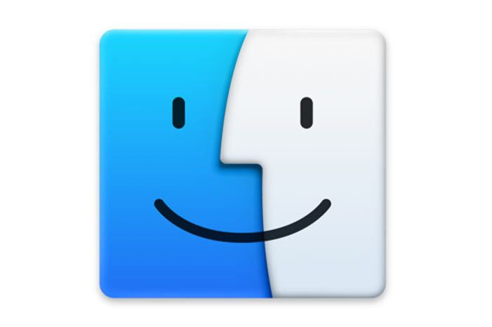
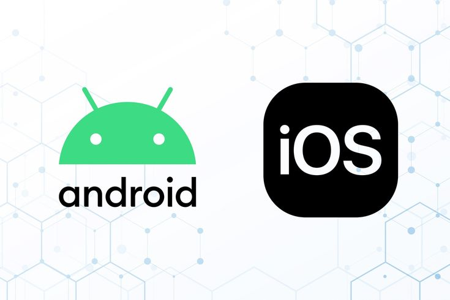

What is an Operating System?
An Operating System (OS) is a software that acts as an intermediary between the computer hardware and the user. It allows users to interact with the hardware through a set of programs that manage hardware resources efficiently and securely.
Core Functions of an Operating System
- Process Management: Controls the execution of processes, including multitasking and scheduling.
- Memory Management: Keeps track of each byte in a computer’s memory and allocates memory when needed.
- File System Management: Organizes and controls reading, writing, and storage of files.
- Device Management: Manages input/output devices through drivers.
- Security: Protects data and resources from unauthorized access and threats.
- User Interface: Offers GUI or CLI for user interaction with the system.
- Networking: Supports communication and sharing between devices over networks.
- Virtualization: Allows multiple virtual machines to run on a single physical system.
Types of Operating Systems
- Batch OS: Executes batches of jobs with minimal user interaction (e.g., early IBM systems).
- Time-Sharing OS: Allows multiple users to share system resources simultaneously.
- Distributed OS: Manages a group of independent computers and makes them appear as a single system.
- Real-Time OS: Used for systems with strict time requirements, such as in robotics or aerospace.
- Mobile OS: Designed for smartphones and tablets (e.g., Android, iOS).
Popular Operating Systems
-
 Microsoft Windows: The most widely used OS for personal and business computers.
Microsoft Windows: The most widely used OS for personal and business computers.
-  macOS: Apple's desktop OS known for sleek design and security.
-
 Linux: Open-source OS used in servers, embedded systems, and development environments.
Linux: Open-source OS used in servers, embedded systems, and development environments.
-  Android & iOS: Mobile OSes powering billions of smartphones and tablets worldwide.
-
 Ubuntu: A user-friendly Linux distribution ideal for beginners and students.
Ubuntu: A user-friendly Linux distribution ideal for beginners and students.
History and Evolution
The first OS were developed in the 1950s for mainframe computers. By the 1980s, graphical interfaces like Apple's System 1 and Windows 1.0 revolutionized user interaction. In the 1990s, Linux emerged as a powerful open-source alternative. Today, operating systems are found in almost every device, from smartwatches to web servers.
Real-World Applications
- Business: Windows and Linux used in office networks, data centers, and workstations.
- Education: Chromebooks and Linux systems help deliver low-cost learning environments.
- Embedded Systems: Real-time OS in ATMs, self-driving cars, industrial robots.
- Cloud Computing: OS like Linux power major platforms like AWS, Azure, and Google Cloud.